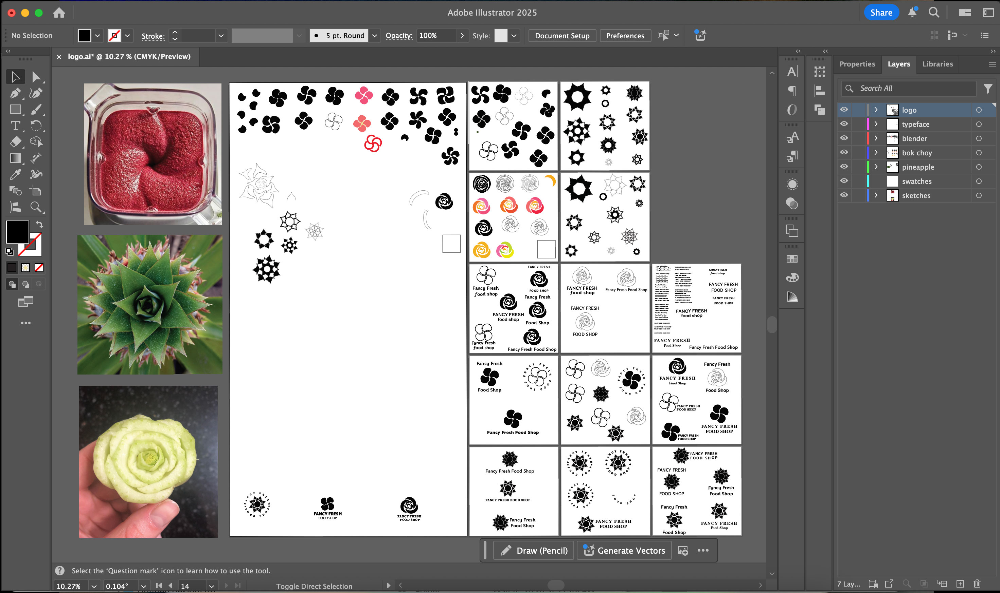
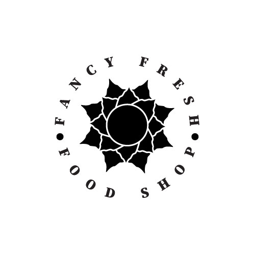
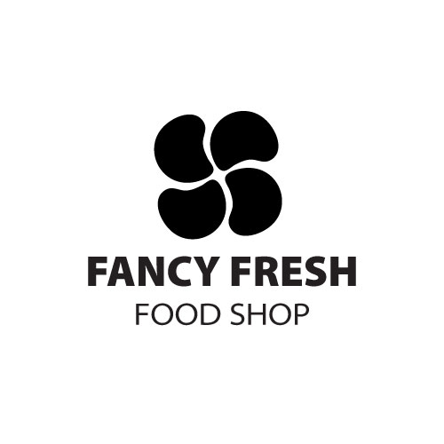
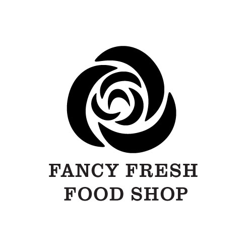
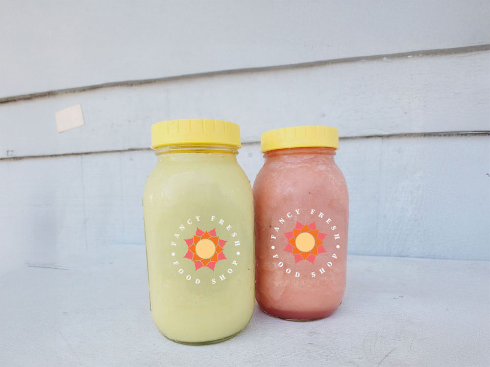
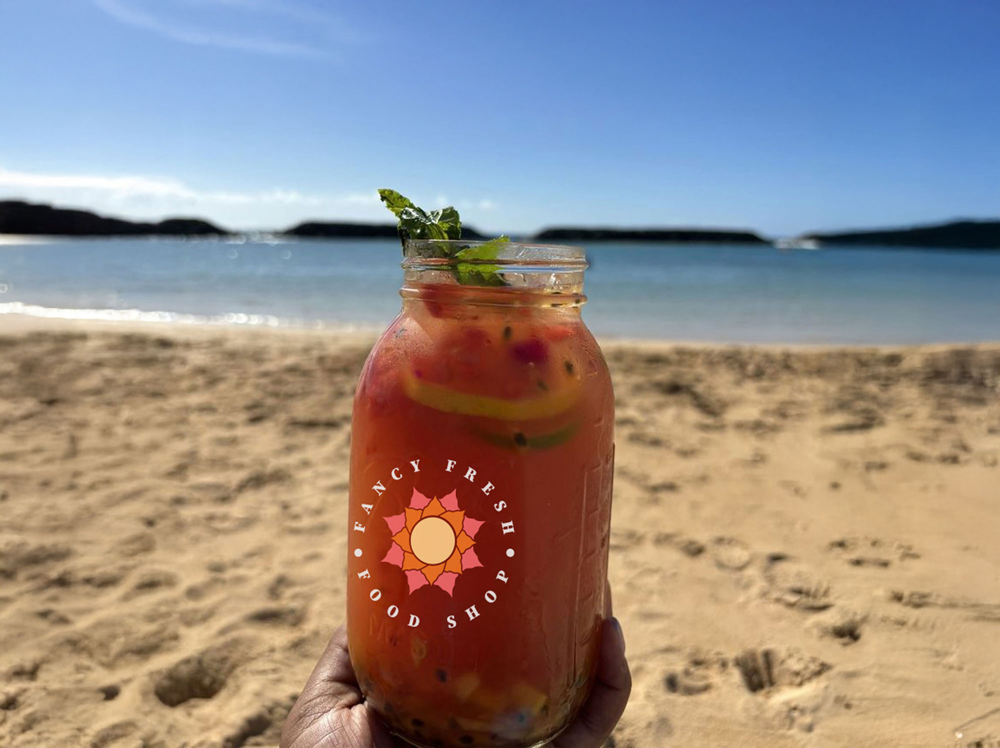

logo (re)design
Fancy Fresh Food Shop
Client: Fancy Fresh Food Shop
Project Type: Brand Identity
Competencies: Illustration, Iconography
Software: Illustrator, Photoshop
brainstorming process
Through brainstorming and word mapping, I identified key themes and symbols for each story. This process helped me distill complex narratives into simple visual concepts that could be effectively represented on the book covers. This approach ensured that the designs were not only visually appealing but also deeply connected to the essence of each story.
sketches
Illustrator Artboard

Finalization

option 1:
Pineapple Top
I chose the top of a pineapple as the main element of the logo because it's a widely recognized tropical fruit and one of many key ingredients in Fancy Fresh Food Shop's drinks. The top view of a pineapple is not only visually striking but also naturally symmetrical, making it an ideal shape for a clean and modern logo. Its unique form adds a sense of freshness and energy while still reflecting the vibrant, natural ingredients used by the shop.

option 2:
Blender
I drew inspiration from the aerial view of a blender, a staple tool in Fancy Fresh Food Shop's daily operations. From above, the blender's blades create a dynamic and recognizable shape that represents motion, energy, and freshness—qualities that reflect the brand's identity. This perspective also allowed me to simplify the form into a modern, abstract symbol while still connecting it directly to the shop's focus on blended drinks and healthy ingredients.

option 3:
Bok Choy (Rose)
I found inspiration in the base of a bok choy—when sliced, it reveals a beautiful, rose-like pattern, one of nature's unexpected and stunning designs. Its natural form not only connects directly to the shop's fresh, plant-based ingredients but also adds an element of elegance and organic beauty to the logo. By highlighting this detail, I was able to create a design that feels both intentional and uniquely tied to the brand.

